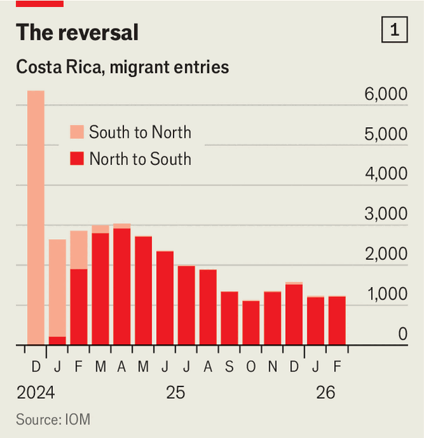
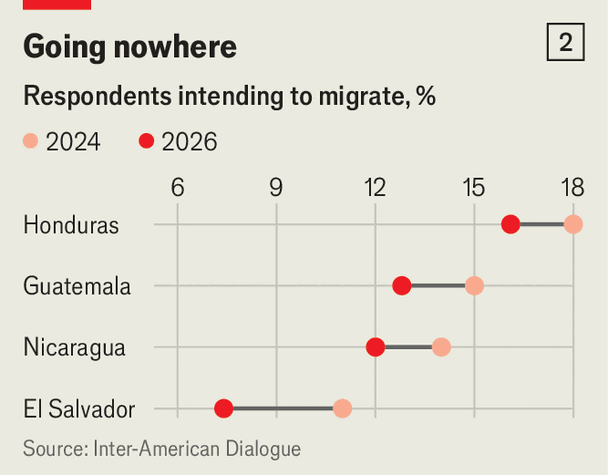
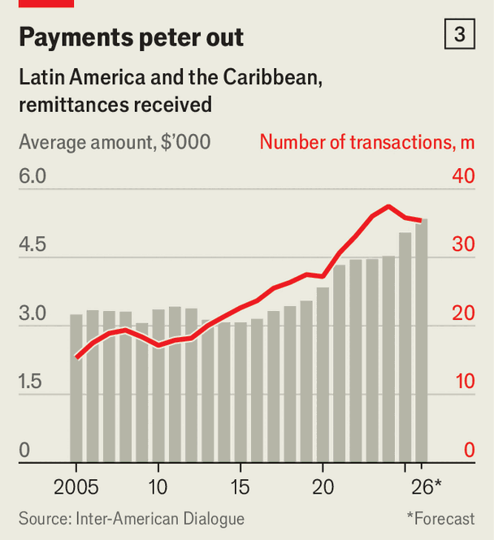

The world’s busiest migration route has gone quiet
Donald Trump’s immigration curbs have changed the movement of people throughout a hemisphere
Oct 1st 2026
Over the past 50 years at least 23m people born in Latin America migrated to the United States. It was the largest sustained flow of migrants in the world to a single country, surging in the years after covid-19. Governments and people in Latin America got used to it, and the money the new American residents sent home.
Then Donald Trump returned to power. In the year to July 2026 US Customs and Border Protection recorded 137,000 encounters between its agents and migrants at the southern border. That was a decline of 94% from the same period in 2024, which saw 2.4m encounters. The Darién Gap, the jungle route from South America into Panama, tells the same story: crossings fell by 99.9% over the same period. In Costa Rica the number of migrants heading north has fallen to almost nothing, while the total going south has jumped (see chart 1). The world’s busiest migration corridor has fallen quiet.

Some of the surge in the years after covid-19—the only other moment in the past decade when migration slowed—was always going to subside. But the change is almost entirely Mr Trump’s doing. Migrants have reacted to him ending legal pathways to asylum, expanding enforcement, accelerating deportations, and making clear that they are not welcome.
Mexico was once both a waypoint on the route to the United States and the source of most migrants. The country has become a destination for other migrants, says Luciana Gandini of UNAM, a university in Mexico City, the capital. Many have been at Casa Tochan, a shelter in Mexico City, for well over a year. Cubans, who used to travel through Mexico to reach the United States, are staying. Cuban asylum applications in Mexico rose from 17,884 in 2024 to 34,662 in 2025.
The other big economies near the United States have also seen an influx. Haitian asylum claims in Canada rose from 8,124 in 2024 to 18,027 in 2025. Cuban claims in Brazil increased from 22,000 to 42,000. Some smaller countries are seeing even larger proportional increases. Uruguay took in a record 15,000 Cubans in 2025, triple the year before.
Many Latin American governments are tightening their own borders in response. Abelardo de la Espriella, Colombia’s new right-wing president, has ordered raids to deport undocumented immigrants. There are at least half a million undocumented Venezuelans in the country. In March Chile’s president, José Antonio Kast, flew north days after taking office and gave a speech while a deep trench was dug along the Peruvian border behind him.

Most who had been considering a move to the United States are now simply staying put, either at home or wherever they ended up en route. The prospect of earning more in the United States no longer appears to be worth the increased likelihood of being turned back at the border or deported. Luis Alvarado, 41, left Venezuela with the intention of working in the United States for a few years. But when he got to Panama and heard they had closed the border, “I decided not to risk it,” he says. ”It seemed a bad idea once Trump started,” says Carlos, a Colombian migrant. He made it to Monterrey, a hub in northern Mexico, before backtracking.
The flow of money is also important. The Inter-American Dialogue (IAD), a think-tank based in Washington, estimates that remittances worth just under $150bn are sent from the United States to Latin America every year. So far, overall, the money has kept flowing (see chart 3). Remittances to Central America rose by a fifth in 2025, to $55.4bn; Honduras alone took in nearly $6bn in the first half of 2026, up by 14%. But Manuel Orozco of the IAD thinks the rise is due to migrants sending home more money than usual because they are worried that they might be deported.
That will not go on for ever. Remittances are nearing “a threshold”, says Mr Orozco. The number of transactions is already falling. And Mexico, which has more emigrants living in the United States than any other country, saw the value of its remittances drop. Mexicans sent $61.8bn home in 2025, down by 4.6% from 2024, the first annual fall since 2013 and the sharpest decline for 16 years. If this pattern extends across the region, it will hurt. Money sent home is worth 19% of GDP in Guatemala, 28% in El Salvador and over 30% in Honduras, according to the World Bank.
The economics are not all dismal. Some countries are keen to keep more of their people, and to welcome others. Latin America as a whole is ageing fast, with a fertility rate too low to maintain its population. If they work, migrants and returning residents can ease labour shortages and help public finances. But integration can be tricky. Many need help with paperwork, housing and psychological support.

There could be political consequences to slowing migration, too. Significant outflows of people have long acted as a pressure valve in repressive places like Cuba, Nicaragua and Venezuela. Those who leave tend to be young, energetic and relatively better off, the sorts of people who can most effectively challenge the government through protest. “If you don’t have migration, you will have some form of social protest,” says Mr Orozco.
Mr Trump’s migration slowdown might end up as a blip. “This is all temporary,” says one UN official in the region. He thinks migrants will make for the United States again as soon as they can. He points to a community of Haitian migrants who arrived in Tijuana in Mexico between 2014 and 2016 and integrated well; their children were Mexican. Yet they left almost overnight when in 2021 Joe Biden, who was president at the time, renewed the protected status of Haitians in the United States. The United States continues to offer economic opportunities that nowhere else can, says Marcus González, a Salvadoran who is in Mexico City having been deported from the United States in December. That there are so many migrants in the United States already means that word of new opportunities travels fast.
Migrants tend to be resistant to simply returning home. Venezuela offers a clear example. Since the country’s dictator, Nicolás Maduro, was seized by US special forces in January, few Venezuelans have returned. A survey of Venezuelans abroad taken in February and March found that only 45% would consider returning even if conditions improved. “It will take years to get better,” says Alexander, a 59-year-old Venezuelan in Mexico City.
The number of people making for the United States has been rising since May. More people, especially Hondurans, have been arriving at Casa Tochan lately, determined to head north. Mr Orozco expects roughly 415,000 irregular arrivals in the United States this year—2% more than last year, though still far below 2019’s 750,000. He predicts that the number will settle at around 600,000, though he notes that a crisis could cause numbers to spike.
That rebound would look nothing like the boom in migration between 2021 and 2023, when border agents apprehended 2m people a year at the southern border. No Democrat who might follow Mr Trump would be likely to adopt the liberal approach to border security of Mr Biden. But migration, says Ms Gandini of UNAM, is not a singular phenomenon. Some people who have settled, found work and started families in Mexico are likely to stay there, whatever happens. Others, perhaps people whose families are in the United States, will leave the moment they can. Mr Trump succeeded in squashing an important migration route. But the forces that draw humans over borders will outlast him, and may well reassert themselves. ■